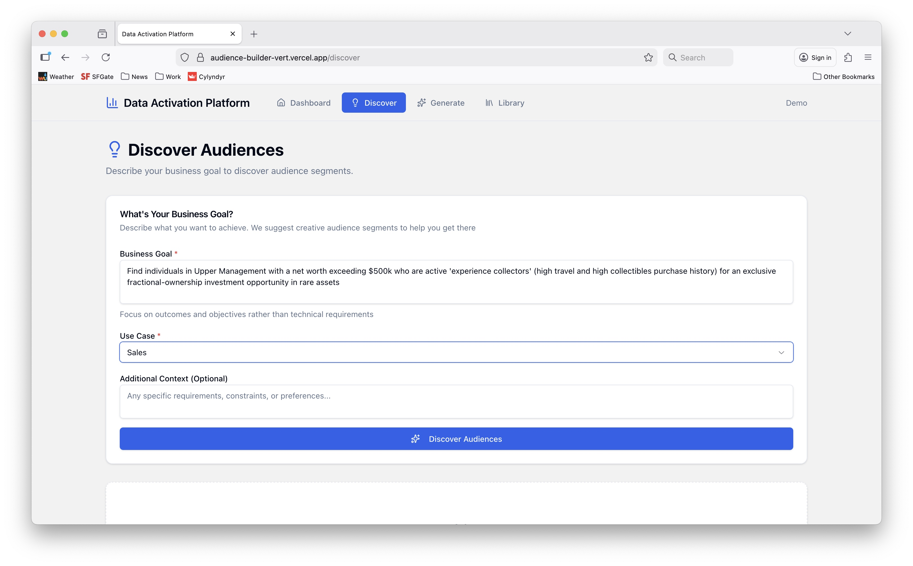
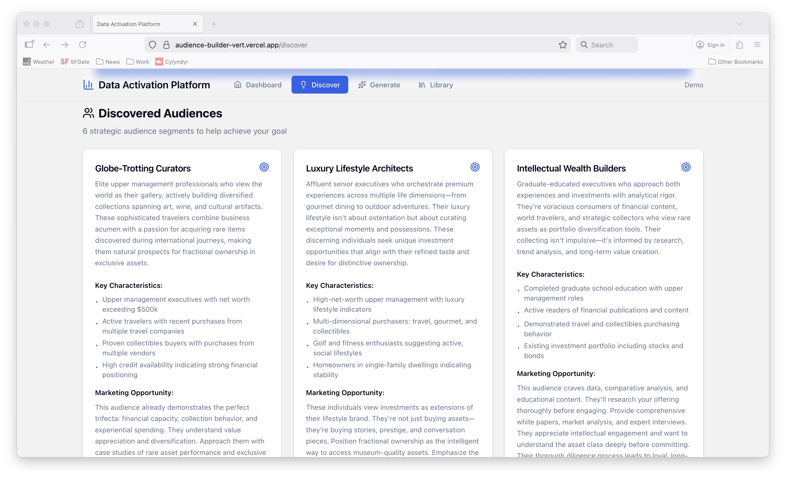
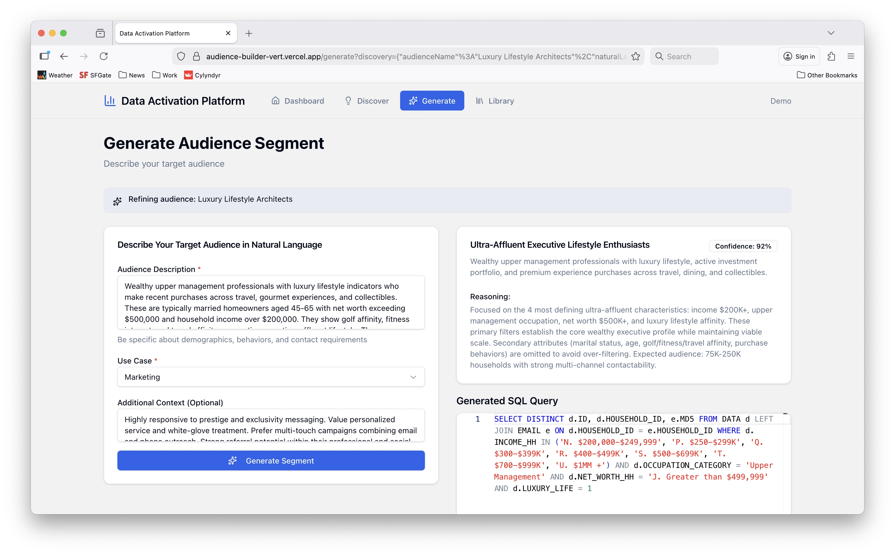
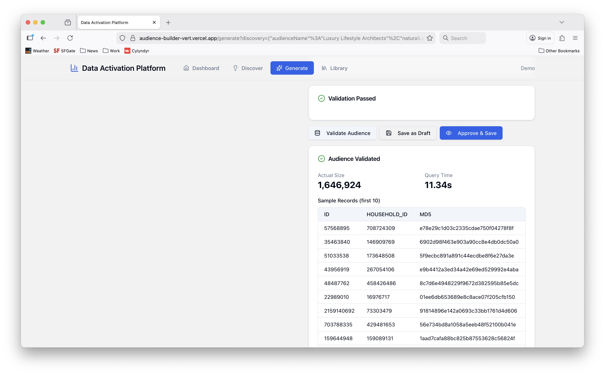
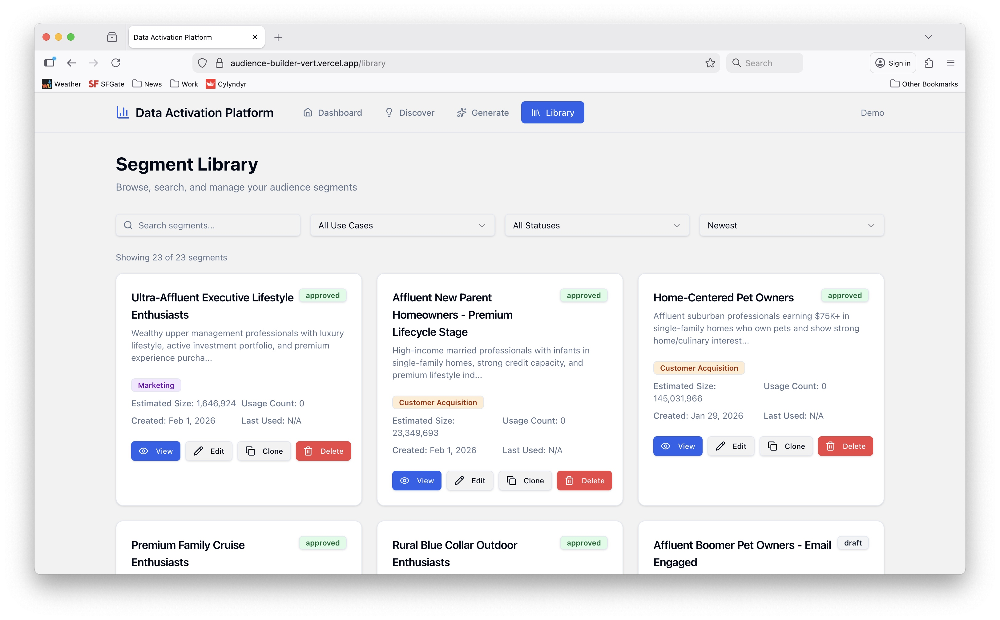

Audience Activation as a Service
Business & Team Vision
Thesis
The audience data industry has a discovery and fulfillment problem.
Data providers have incredible assets—identity graphs with billions of consumer records, behavioral signals, demographic attributes, purchase intent. But activating that data for brands is painfully manual:
- Client has a vague goal ("we want to reach high-value prospects")
- Sales tries to translate that into audience specs
- Data ops writes SQL based on incomplete understanding
- Back-and-forth on specs ("can we also include..." / "what about...")
- Data ops rewrites SQL
- Upload to destination
- Repeat for every refresh
The bottleneck isn't only SQL — it's the discovery and ideation step as well. Clients don't know what's possible. Sales doesn't know the schema. Data ops doesn't know the strategy.
| What if creative discovery was infinitely scalable, and fulfillment was automated, requiring only the leanest sales and data ops headcount? |
That's what we'd build.
Product
An AI-powered platform that transforms natural language audience descriptions into activated segments—in minutes, not days.
User Flow:
- Client describes a business goal or campaign objective
- AI acts as a strategic ideation partner—suggesting 3-6 creative audience concepts with compelling narratives, not just demographic cuts
- Client selects an audience concept to pursue
- AI generates the precise SQL query against the identity graph
- Client sees real-time counts and sample data, iterates as needed
- Client approves, audience syncs to their destination
- Automated refreshes capture new records daily/weekly
This is more than just "natural language to SQL." A deeply enriched proprietary semantic layer controls AI/LLM behavior to surface audience ideas the client wouldn't have thought to ask for. The same semantic asset powers AI generated code to build the audiences from the data source. It's strategic, scalable discovery and delivery, not generic consumer LLM outputs.
What exists today (working POC):
- AI-facilitated audience discovery and ideation
- Natural language to SQL generation
- Custom semantic layer v0.01
- Real-time Snowflake integration for counts and samples
- Basic review and approval workflow
What we'd need to build next:
- Multi-destination reverse ETL activation tooling (buy, not build)
- Audience management (save, edit, refresh scheduling)
- User accounts and client workspaces
- Table-stakes UX not yet implemented (nav, error handling, etc)
- Usage tracking and billing integration





The core AI-to-SQL engine works. The product needs to be hardened for production use.
Business Model
Revenue Streams
Primary: Activation Fees
- Per-audience fee ($X per activated segment)
- Or per-record pricing ($Y CPM on delivered records)
- Or monthly retainer with volume tiers
Secondary: Managed Service Premium
- Strategy and audience design consulting
- Custom integrations for larger clients
- Priority support SLAs
Cost Structure
| Category |
Monthly Estimate |
| Snowflake compute |
$50-500 (scales with query volume) |
| Reverse ETL tooling |
$500-2,000 (Hightouch/Census) |
| AI API costs |
$100-500 (Anthropic API) |
| Infrastructure |
$100-300 (hosting, monitoring) |
| Total fixed costs |
~$1,000-3,500/month |
Three-person team. Sub-$5K/month in tooling. Gross margins can be 70%+ at scale.
Data Provider Arrangement
Partner with an identity graph provider:
- They provide a Snowflake Secure Share (zero-copy data access)
- They carry storage costs (it's their data)
- We carry compute costs (pennies per query)
- We share revenue on activations (terms TBD)
Their upside: New revenue channel with near-zero operational burden
Our upside: Access to monetizeable data without building or buying it
Why Now
1. AI unlocks BOTH bottlenecks
The constraint was never just SQL—it was the entire discovery-to-fulfillment chain. AI now handles strategic ideation (what audiences should we build?) AND technical translation (how do we query for them?). Data ops is expensive, slow, and doesn't scale. AI makes the whole process instant and self-serve.
2. Reverse ETL has matured
Tools like Hightouch and Census have productized what used to require custom engineering. Destination integrations are solved problems now.
3. Snowflake data sharing is frictionless
Zero-copy sharing means we can access partner data without anyone moving files, managing exports, or duplicating storage. The infrastructure layer is available and becoming commoditized.
4. The market is fragmented
Big players (LiveRamp, Acxiom, Experian) are slow-moving enterprises. Smaller data providers lack go-to-market muscle. There's room for a nimble operator.
Team
Product & Tech
- Owns product vision and development
- Maintains and evolves the AI-powered platform
- Manages data provider partnership
- Technical architecture decisions
CRO / Head of Growth
What you'd own:
- All sales and revenue motion
- Client acquisition (brands, agencies, consultancies)
- Pricing strategy and deal structure
- Client onboarding and success
- Partnership development (beyond data providers—agencies, platforms)
What we need:
- Someone who can sell data audience products to non-technical buyers
- Experience in AdTech, MarTech, or data services
- Comfort with consultative, relationship-based sales
- Willingness to do everything from cold outreach to contract negotiation
Why you'd want this:
- Ground-floor equity in a capital-efficient business
- Clear path to meaningful revenue (not a 5-year R&D bet)
- Shape go-to-market strategy from scratch
- Real ownership, not a "VP title with no authority"
Head of Data Services
What you'd own:
- Reverse ETL platform (Hightouch, Census, or similar)
- Destination configurations and maintenance
- Audience QA before activation
- Sync monitoring and troubleshooting
- Client deliverability and match rate optimization
What we need:
- Hands-on experience with reverse ETL or data pipeline tools
- Familiarity with ad platform APIs and data formats (Meta, Google, TTD)
- Attention to detail—audiences need to be right before they ship
- Ability to build processes that scale without adding headcount
Why you'd want this:
- Own the entire fulfillment engine
- Build the operational playbook from zero
- Direct impact on client success and retention
- Business ownership
The "Special Ops" Model
We're not building a 50-person company. We're building a 3-5 person operation that punches way above its weight.
How we stay lean:
- AI handles strategic ideation AND SQL generation (no strategists, no data analysts)
- Reverse ETL handles low/no code integrations (no integration engineers)
- Snowflake sharing handles data access (no data engineering)
- Clients self-serve where possible (minimal support burden)
Team focuses on:
- Selling (CRO)
- Fulfilling (Data Ops)
- Building (Product/Tech)
Everything else is automated or fractionally outsourced.
Financial Vision
Year 1 Target: $300K-500K ARR
- 20-50 active client relationships
- 100-500 audiences activated
- Prove the model, refine pricing, nail retention
Year 2 Target: $1M-2M ARR
- Expand client base through referrals and partnerships
- Introduce self-serve tier for smaller clients
- Potentially add second data provider partnership
Long-term optionality:
- Stay lean and profitable (lifestyle business that prints cash)
- Raise capital to accelerate (if market opportunity warrants)
- Strategic acquisition target (data providers, ad platforms, agencies)
The model is designed to be default-alive on modest revenue.
What I'm Looking For
Commitment level: This is a founding team, not a side project. Equity splits will reflect that.
Compensation structure: Below-market salary + meaningful equity. We get to profitability fast, then increase our comp.
Working style: Remote-first, async-heavy, high trust. We're adults. Few standups, no surveillance. Too old for that shit.
Timeline: Team in place and first revenue within 6 months, sooner if possible.
Operational Considerations & Future Needs
Areas That Need Ownership (Team Decides Who)
Client Success / QA Layer
- Who validates an audience "makes sense" before it ships?
- AI-generated SQL is good, but someone should eyeball counts and sample data before activation
- Could live with Data Services (quality focus) or CRO (client relationship focus)
- Eventually: build QA guardrails into the platform itself
Destination Expertise ("Last Mile")
- Each ad platform has quirks: Meta's hashing requirements, Google's customer match formatting, TTD's segment taxonomy
- Data Services owns this, but it's real domain knowledge that takes time to build
- Reverse ETL tools abstract some of this, but not all
Pricing Model Decisions
- Per audience? Per record delivered? Monthly retainer? Hybrid?
- Affects how we sell, how we track, how we invoice
- CRO will drive this, but it's a founding team decision
Client Onboarding Friction
- Clients need to provide destination credentials (Meta Business Manager access, Google Ads account ID, etc.)
- This is often the slowest part of activation deals
- CRO handles initially, may need lightweight tooling to streamline
Monitoring & Support
- Syncs break. Destinations change APIs. Match rates drop mysteriously.
- Data Services owns the dashboards and gets paged
- Goal: tooling that minimizes noise, escalation paths that are clear
Compliance & Legal
- Usage agreements with the ID Graph provider
- Client-facing DPAs, terms of service
- Not day-one, but needs to be buttoned up before scaling
Part-Time / Fractional Roles (Post-Revenue)
Once revenue starts flowing, we'll need help with "the business runs correctly" so the three of us can focus on selling, building, and fulfilling.
Fractional CFO / Finance
- Invoicing and collections
- Cash flow management
- Basic bookkeeping and reporting
- Tax prep coordination
- ~5-10 hours/month initially
RevOps / Operations
- Contract templates and deal desk
- CRM hygiene and pipeline reporting
- Client billing reconciliation
- Process documentation
- ~10-15 hours/month initially
These can be fractional hires, freelancers, or outsourced to a firm. The goal is to keep the core team focused on high-leverage work.
Next Steps
- Demo — See the POC in action
- Question — Poke holes in the thesis
- Discuss — Is this a good opportunity